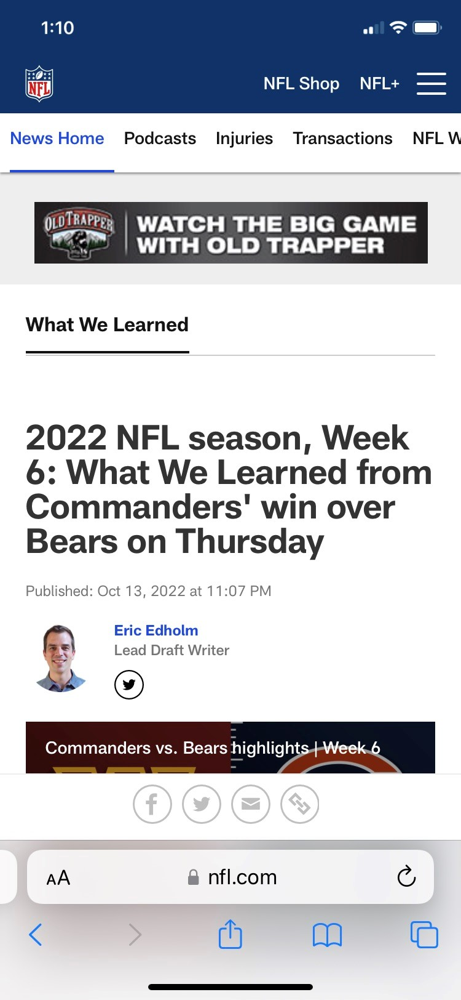

Design principle: White Space and Clean Design
www.summitracing.com
VISIT summitracing.comThe section below the nav banner has only two drop downs with plenty of space in between. The next section has a simple marketing message that does not take up the whole width of the viewport. These two design strategies combine well with the next section which uses nearly the viewport width to show a sporty image. Then it goes back to a section with noticeable whitespace. I think this makes for a great first impression.
Design principle: PARC (Repetition)
elkridgecity.org
Visit: elkridgecity.orgThis is more of a bad example. There are 5 or 6 fonts used here. I think it would look better if the phone number font was the same font as that used for "Where Home Is" (favicon?). A little off topic for typography but both the where home is image and the mountains background images are fuzzy in a large viewport.
Design principle: Fitts's Law
nfl.com
 visit nfl articleI see here that the menus, are large enough for an easy target in a mobile viewport. The audience are likely to have large fingers with lessened ability to hit a small target. Additional left-right scrolling is not needed for the main content. Beyond the header and nav selections, there are few links or other noise to draw focus away from the content detail.